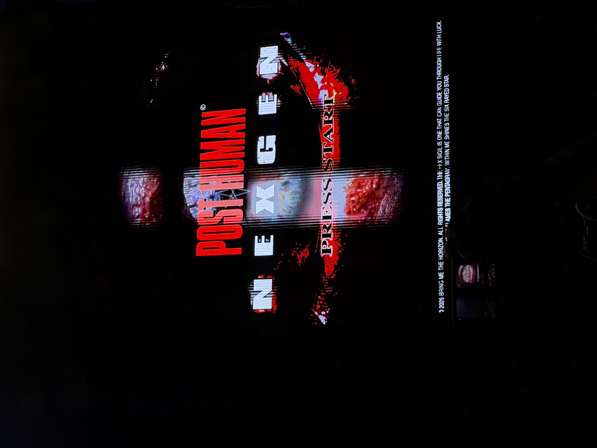
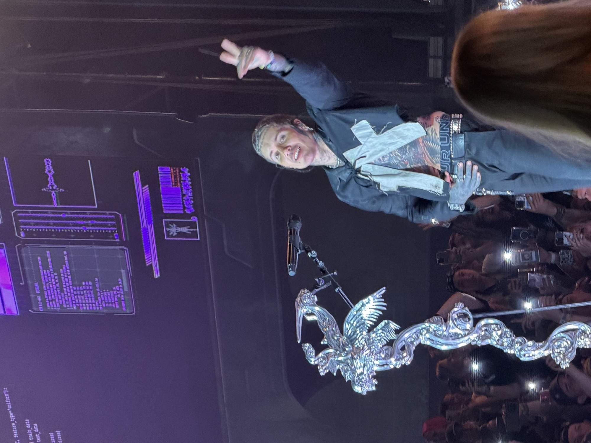
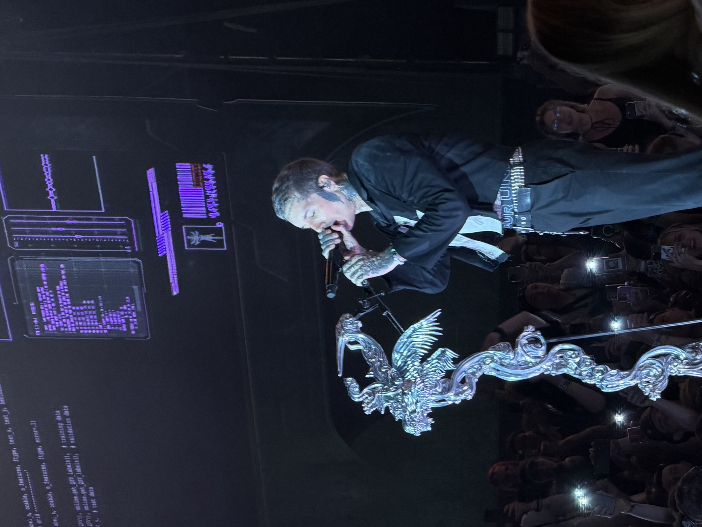
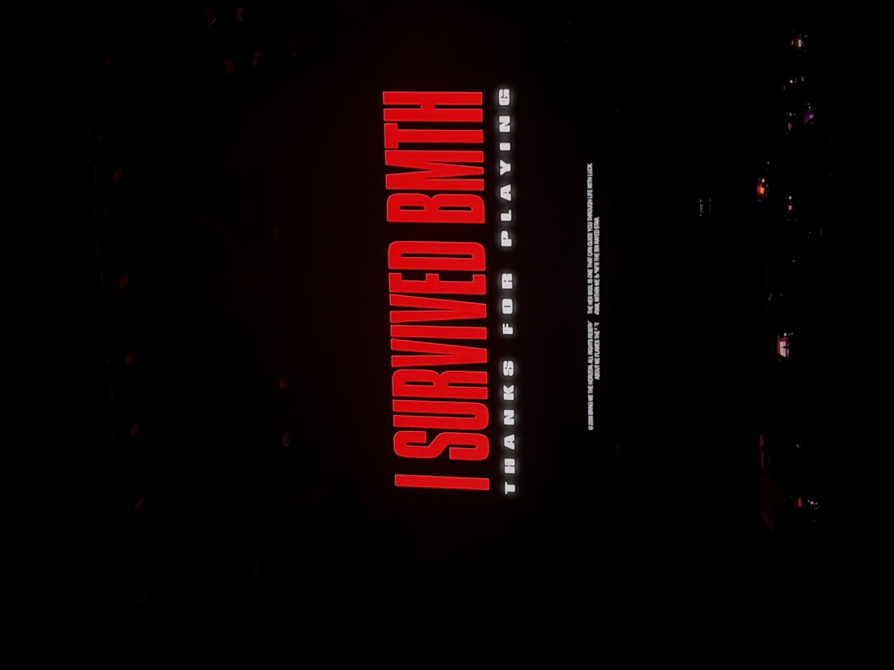

L I V E • R I T U A L • C H R O N I C L E S
BRING ME THE HORIZON CATHEDRAL OF THE DAMNED
“MEMENTO MORI • POST HUMAN ASCENSION”
An immersive photographic chronicle capturing the monolithic stained glass visuals, brutal dystopian gothic architecture, and raw visceral euphoria of Bring Me The Horizon live.
04
ICONIC FRAMES
🞢
35MM / RAW
ATMOSPHERE
🞢
4K UHD
ARCHIVAL SIGHTS
ARCHIVAL VAULT
SACRED RELICS & FLAMES
❧
✠
❧



✠
“EVERY SYSTEM WE BUILT HAS CRUMBLED INTO ASH.
ONLY THE CATHEDRAL OF SOUND REMAINS.”
— POST HUMAN ARCHIVES • LIVE WITNESS —